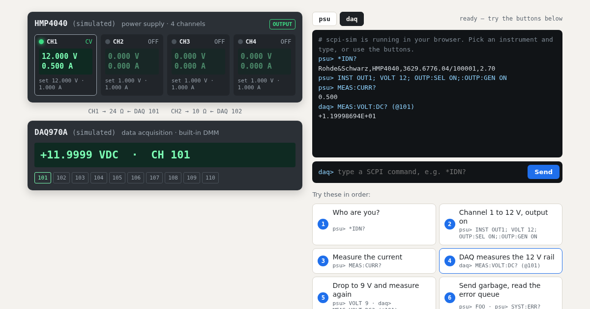

powering up…
CH1 → 24 Ω ← DAQ 101
CH2 → 10 Ω ← DAQ 102
– – –
powering up…
starting…
Try these in order:
Break something:
The live demo could not start here.
This is what it looks like. Everything below works the same with pip install scpi-sim.

What you just used
your Python / PyVISA test script
TCP :5025 →
scpi-sim
instead of the real instrument
scpi-sim normally runs on your laptop or in CI and listens on raw TCP sockets like a LAN instrument. Your existing scripts connect to it unchanged. It keeps state like the real thing: settings, outputs, error queue, relays. A bench file wires supplies, loads and meters together, so measurements follow what the script switched. Ten profiles copy the command dialects of real models from Rohde & Schwarz, Keysight, Keithley and Siglent.
The same thing from Python
pip install scpi-sim
scpi-sim serve --bench bench.yaml # the bench from this pageimport pyvisa
rm = pyvisa.ResourceManager("@py")
opts = dict(read_termination="\n", write_termination="\n")
psu = rm.open_resource("TCPIP0::127.0.0.1::5025::SOCKET", **opts)
daq = rm.open_resource("TCPIP0::127.0.0.1::5026::SOCKET", **opts)
print(psu.query("*IDN?"))
psu.write("INST OUT1; VOLT 12; OUTP:SEL ON;:OUTP:GEN ON")
print(psu.query("MEAS:CURR?")) # 0.500
print(daq.query("MEAS:VOLT:DC? (@101)")) # +1.19994013E+01The bench file is examples/profiles/bench.yaml.
What else it does
- Fault injection from tests or a control port: timeouts, dropped answers, error codes, offsets, noise.
- pytest plugin: start a bench per test run with
--scpi-bench bench.yaml. - Docker image:
ghcr.io/steitec/scpi-simfor CI pipelines. - Instrument profiles: R&S HMP4040, NGE103B, HMC8012 · Keysight E36312A, 34461A, DAQ970A · Keithley DMM6500, DAQ6510 · Siglent SPD3303X, SDM3065X.